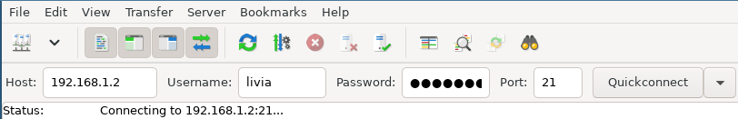
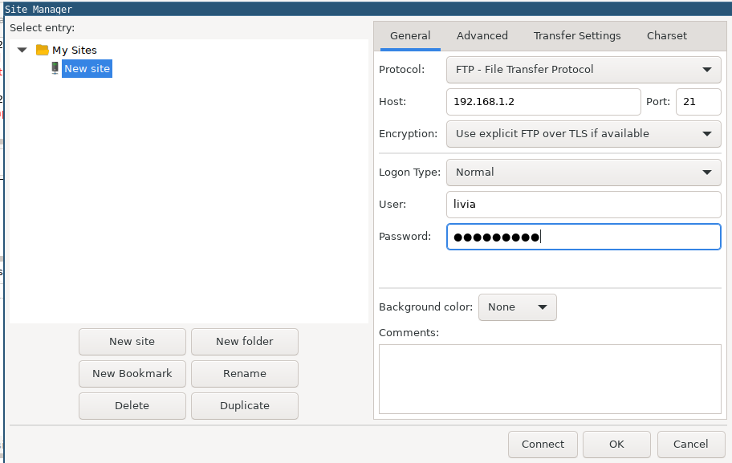
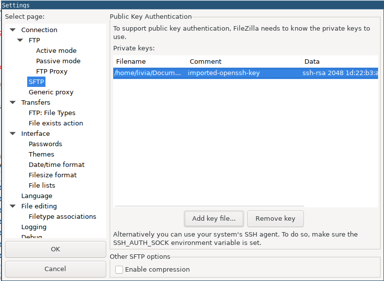
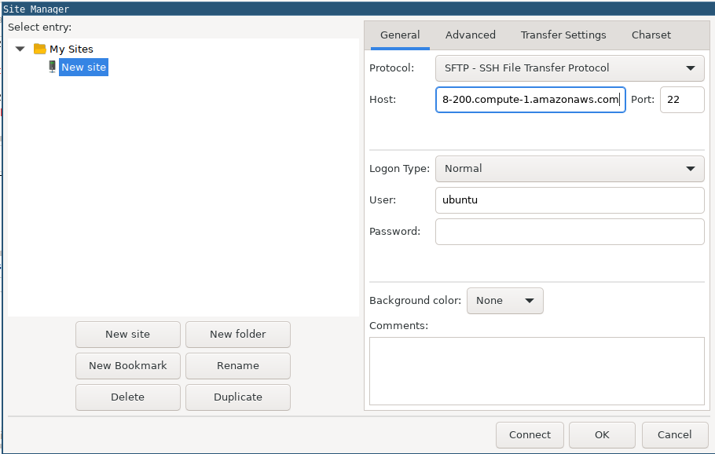
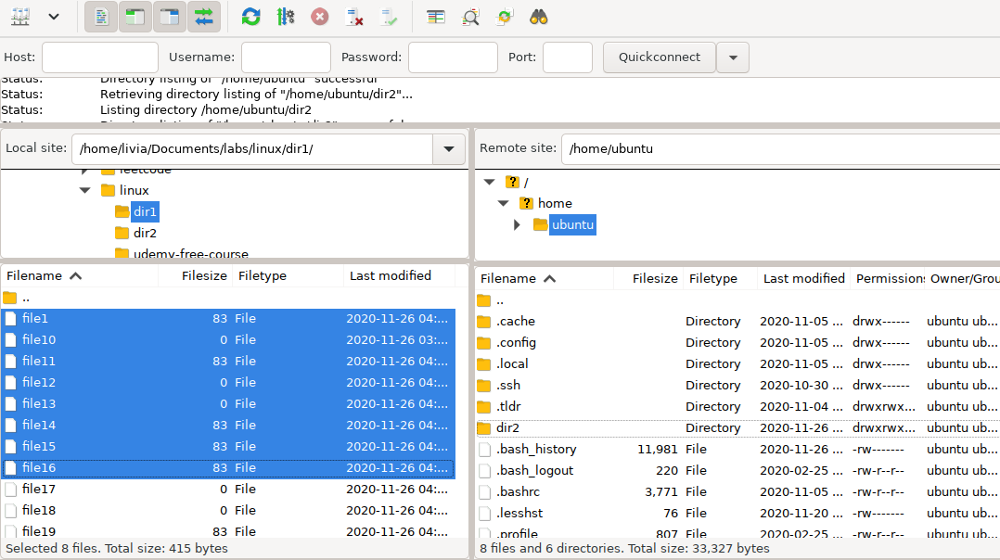

Posted on November 27, 2020 - 2 minute read
FileZilla Basics
FileZilla is a free and open-source FTP client.
Basic Connection
Using Quickconnect bar:
- Enter the remote hostname or IP address at Host.
- Enter the remote username at Username and the password at Password.
- Port: 21 for FTP, 22 for SFTP
- Click Quickconnect. Example:

Using Site Manager:
- On the File menu, click Site Manager.
- In the Protocol list box, select FTP.
- In the Host text box, type the hostname or IP address.
- In the Port text box, type 21.
- In the Logon Type list box, select Normal.
- In the User text box, type your username.
- In the Password text box type your password.
- Click Connect.

Add a private key for SSH authentication
- On the Edit menu, click Settings.
- Under Select Page, click Connection, and then click SFTP. A list of currently installed private keys appears.
- Click Add key file. Select the key, and then click Open.

- On the File menu, click Site Manager.
- In the Protocol list box, select SFTP.
- In the Host text box, type the hostname or IP address.
- In the Port text box, type 22.
- In the Logon Type list box, select Normal.
- In the User text box, type your username.
- Leave the Password text box blank.
- Click Connect.

After a few seconds, FileZilla establishes a connection to the server.
FileZilla may display a message that the server’s host key is unknown. To trust the server permanently, select the Always trust this host, add this key to the cache check box, and then click OK.
Tranfering files
Once a remote connection is open, you can navigate on the server almost like navigating on your local machine. The current local directory tree is displayed on the left side of the main window by default, the remote directory is displayed on the right side.
To transfer directories and/or multiple files:
- Select the files.
- Right-click the selection.
- Then you can click on Upload/Download in the popup menu.
Or drag the files from one side and drop them on the other side.

More about FileZilla can be found at the manual page.